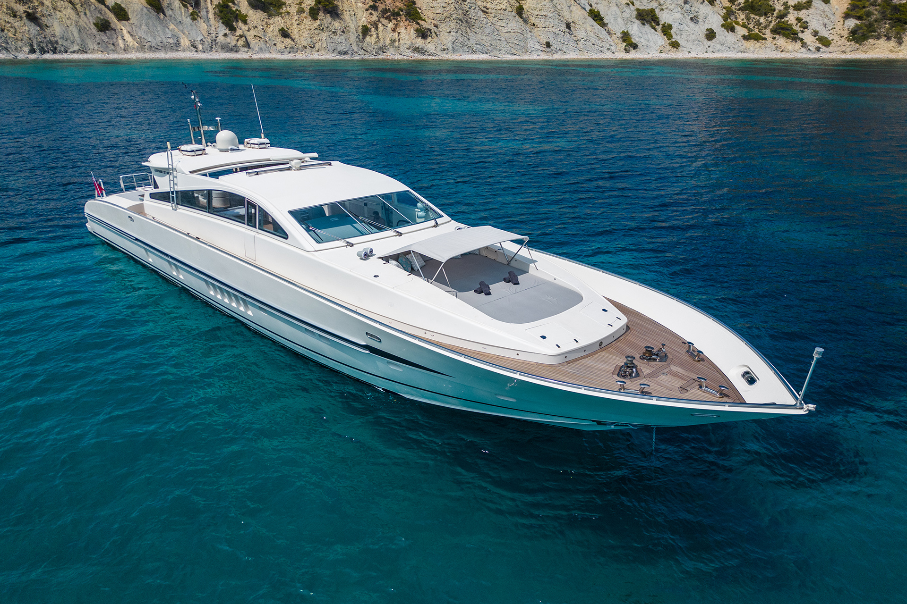

Why Spring is the Ideal Time for Your Ibiza Yacht Charter
By Yachts Zenith, 24.02.2024
Calm Waters, Unforgettable Adventures: Your Ibiza Yachting Escape
Spring weather blesses Ibiza with calm seas, making for smooth sailing and perfect conditions for watersports. Navigate effortlessly to picturesque coves like Cala Comte or Cala Salada, often less crowded in the shoulder season, and enjoy ample anchoring space for a tranquil swim in the turquoise waters.

A Charter Suited to Your Desires
Whether you envision a romantic getaway, a vibrant escape with friends, or a family-focused adventure, Ibiza caters to all styles. With a wider selection of yachts available at potentially more advantageous rates, you can tailor your charter experience to your specific needs and budget.
Springtime Exclusivity: Yachting at Its Most Relaxed
Indulge in the exclusivity of popular anchorages and beach clubs without the peak-season crowds. Savor the personalized service onboard your charter as you soak up the sun on deck, knowing you've secured the best spots to experience Ibiza's springtime awakening.
Island Exploration, Your Way
With a private yacht, you chart your own course. Spend leisurely days exploring Ibiza's hidden beaches, discover the rustic charm of Formentera, or venture further to Mallorca's scenic coastline. Spring offers ideal weather for combining onboard relaxation with onshore cultural and culinary discoveries.
Wellness on the Water
Embrace the serenity of the Mediterranean in spring. Your yacht becomes your wellness sanctuary – practice yoga on deck with the sunrise, enjoy healthy meals prepared by your private chef, and unwind with rejuvenating spa treatments.
A Taste of the Ibiza Vibe
April and May see the island's social scene come alive. Attend stylish beach club opening parties, savor long, leisurely lunches, and experience a taste of Ibiza's nightlife without the peak-season intensity.
The Charter Advantage
- Flexibility: Adapt your itinerary based on weather and your mood. Spring offers a spontaneity that peak season crowds can limit.
- Insider Access: Reputable charter companies offer local expertise, ensuring you experience the best of Ibiza's hidden gems, authentic cuisine, and springtime festivities.
- Value: Spring charters often offer advantageous rates and a wider selection of yachts, allowing you to maximize your budget and enjoy the luxury of a private yacht.
Ibiza in Bloom: Your Yachting Adventure Awaits
Discover the allure of an Ibiza yacht charter in spring. Embrace the freedom, exclusivity, and unforgettable experiences that await you on the sparkling Mediterranean waters.